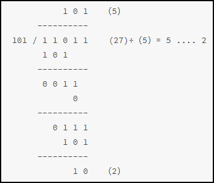

Divider Principle (Fixed-Point)
Similar to decimal division, the process of calculating 27 divided by 5 is as follows:

The division operation process is as follows:
- (1) Take the high-order bits of the dividend, with a bit width equal to the divisor (3-bit data in the example).
- (2) Compare the high-order data of the dividend with the divisor. If the former is not less than the latter, the corresponding quotient bit is 1, and the difference between the two gives the remainder of the first step; otherwise, the corresponding quotient bit is 0, and the former is directly used as the remainder.
- (3) Concatenate the remainder from the previous step with the remaining most significant 1-bit data of the dividend to form new data, then compare it with the divisor. A new quotient and remainder can be obtained.
- (4) Repeat process (3) until the least significant bit of the dividend is also involved in the calculation.
It should be noted that the bit width of the quotient should be consistent with that of the dividend, because the divisor may be 1.Therefore, in the above manual division example, when making the first comparison, the most significant bit 1 of the number 27 (3'b001) should be compared with 3'b101.Based on this calculation process, design a pipelined divider with configurable bit width, where the number of pipeline delay cycles equals the bit width of the dividend.
Divider Design
Single-Step Operation Design
In single-step division, the bit width of the single-step dividend (signal dividend) must be 1 bit wider than the original divisor (signal divisor) to avoid overflow.
To facilitate pipelining, the output needs registers to store the original divisor (signals divisor and divisor_kp) and dividend information (signals dividend_ci and dividend_kp).
The single-step operation result is a new 1-bit quotient (signal merchant) and remainder (signal remainder).
To obtain the final division result, the new 1-bit quotient (signal merchant) also needs to be shifted and accumulated with the previous cycle's quotient result (merchant_ci).
The single-step operation unit design is as follows (filename: divider_cell.v):
Example
module divider_cell
#(parameter N=5,
parameter M=3)
(
input clk,
input rstn,
input en,
input [M:0] dividend,
input [M-1:0] divisor,
input [N-M:0] merchant_ci , //Quotient output from the previous stage
input [N-M-1:0] dividend_ci , //Original divisor
output reg [N-M-1:0] dividend_kp, //Original dividend information
output reg [M-1:0] divisor_kp, //Original divisor information
output reg rdy ,
output reg [N-M:0] merchant , //Quotient output from the operation unit
output reg [M-1:0] remainder //Remainder output from the operation unit
);
always @(posedge clk or negedge rstn) begin
if (!rstn) begin
rdy <= 'b0 ;
merchant <= 'b0 ;
remainder <= 'b0 ;
divisor_kp <= 'b0 ;
dividend_kp <= 'b0 ;
end
else if (en) begin
rdy <= 1'b1 ;
divisor_kp <= divisor ; //Original divisor remains unchanged
dividend_kp <= dividend_ci ; //Original dividend passed through
if (dividend >= {1'b0, divisor}) begin
merchant <= (merchant_ci<<1) + 1'b1 ; //Quotient is 1
remainder <= dividend - {1'b0, divisor} ; //Calculate remainder
end
else begin
merchant <= merchant_ci<<1 ; //Quotient is 0
remainder <= dividend ; //Remainder unchanged
end
end // if (en)
else begin
rdy <= 'b0 ;
merchant <= 'b0 ;
remainder <= 'b0 ;
divisor_kp <= 'b0 ;
dividend_kp <= 'b0 ;
end
end
endmodule
Pipeline Stage Instantiation
Concatenate the remainder (signal remainder) from the single-step calculation with the corresponding 1-bit data of the original dividend (signal dividend), and use it as the new single-step dividend input to the next single-step division unit.
Among them, the dividend, divisor, and quotient data information must also be passed to the next operation unit.
The design of the divider completed by instantiating pipeline-stage modules is as follows (filename: divider_man.v):
Example
//using 29/5=5...4
module divider_man
#(parameter N=5,
parameter M=3,
parameter N_ACT = M+N-1)
(
input clk,
input rstn,
input data_rdy , //Data enable
input [N-1:0] dividend, //Dividend
input [M-1:0] divisor, //Divisor
output res_rdy ,
output [N_ACT-M:0] merchant , //Quotient bit width: N
output [M-1:0] remainder ); //Final remainder
wire [N_ACT-M-1:0] dividend_t [N_ACT-M:0] ;
wire [M-1:0] divisor_t [N_ACT-M:0] ;
wire [M-1:0] remainder_t [N_ACT-M:0];
wire [N_ACT-M:0] rdy_t ;
wire [N_ACT-M:0] merchant_t [N_ACT-M:0] ;
//Initialize the first operation unit
divider_cell #(.N(N_ACT), .M(M))
u_divider_step0
( .clk (clk),
.rstn (rstn),
.en (data_rdy),
//Use the most significant 1-bit data of the dividend as the dividend for the first single-step operation, with high bits padded with 0
.dividend ({{(M){1'b0}}, dividend[N-1]}),
.divisor (divisor),
.merchant_ci ({(N_ACT-M+1){1'b0}}), //Quotient initially 0
.dividend_ci (dividend[N_ACT-M-1:0]), //Original dividend
//output
.dividend_kp (dividend_t[N_ACT-M]), //Original dividend information passed through
.divisor_kp (divisor_t[N_ACT-M]), //Original divisor information passed through
.rdy (rdy_t[N_ACT-M]),
.merchant (merchant_t[N_ACT-M]), //First quotient result
.remainder (remainder_t[N_ACT-M]) //First remainder
);
genvar i ;
generate
for(i=1; i<=N_ACT-M; i=i+1) begin: sqrt_stepx
divider_cell #(.N(N_ACT), .M(M))
u_divider_step
(.clk (clk),
.rstn (rstn),
.en (rdy_t[N_ACT-M-i+1]),
.dividend ({remainder_t[N_ACT-M-i+1], dividend_t[N_ACT-M-i+1][N_ACT-M-i]}), //Concatenate remainder with single-bit data of original dividend
.divisor (divisor_t[N_ACT-M-i+1]),
.merchant_ci (merchant_t[N_ACT-M-i+1]),
.dividend_ci (dividend_t[N_ACT-M-i+1]),
//output
.divisor_kp (divisor_t[N_ACT-M-i]),
.dividend_kp (dividend_t[N_ACT-M-i]),
.rdy (rdy_t[N_ACT-M-i]),
.merchant (merchant_t[N_ACT-M-i]),
.remainder (remainder_t[N_ACT-M-i])
);
end // block: sqrt_stepx
endgenerate
assign res_rdy = rdy_t[0];
assign merchant = merchant_t[0]; //Last quotient result as the final quotient
assign remainder = remainder_t[0]; //Last remainder as the final remainder
endmodule
testbench
Set the dividend bit width to 5 and the divisor bit width to 3, and add self-checking in the testbench, described as follows:
Example
module test ;
parameter N = 5 ;
parameter M = 3 ;
reg clk;
reg rstn ;
reg data_rdy ;
reg [N-1:0] dividend ;
reg [M-1:0] divisor ;
wire res_rdy ;
wire [N-1:0] merchant ;
wire [M-1:0] remainder ;
//clock
always begin
clk = 0 ; #5 ;
clk = 1 ; #5 ;
end
//driver
initial begin
rstn = 1'b0 ;
#8 ;
rstn = 1'b1 ;
#55 ;
@(negedge clk ) ;
data_rdy = 1'b1 ;
dividend = 25; divisor = 5;
#10 ; dividend = 16; divisor = 3;
#10 ; dividend = 10; divisor = 4;
#10 ; dividend = 15; divisor = 1;
repeat(32) #10 dividend = dividend + 1 ;
divisor = 7;
repeat(32) #10 dividend = dividend + 1 ;
divisor = 5;
repeat(32) #10 dividend = dividend + 1 ;
divisor = 4;
repeat(32) #10 dividend = dividend + 1 ;
divisor = 6;
repeat(32) #10 dividend = dividend + 1 ;
end
//Delay the input so that data results can be compared in the same cycle to complete self-checking
reg [N-1:0] dividend_ref [N-1:0];
reg [M-1:0] divisor_ref [N-1:0];
always @(posedge clk) begin
dividend_ref[0] <= dividend ;
divisor_ref[0] <= divisor ;
end
genvar i ;
generate
for(i=1; i<=N-1; i=i+1) begin
always @(posedge clk) begin
dividend_ref[i] <= dividend_ref[i-1];
divisor_ref[i] <= divisor_ref[i-1];
end
end
endgenerate
//Self-checking
reg error_flag ;
always @(posedge clk) begin
# 1 ;
if (merchant * divisor_ref[N-1] + remainder != dividend_ref[N-1] && res_rdy) beginb //In the testbench, the multiplication sign can be used directly without considering the operation cycles
error_flag <= 1'b1 ;
end
else begin
error_flag <= 1'b0 ;
end
end
//module instantiation
divider_man #(.N(N), .M(M))
u_divider
(
.clk (clk),
.rstn (rstn),
.data_rdy (data_rdy),
.dividend (dividend),
.divisor (divisor),
.res_rdy (res_rdy),
.merchant (merchant),
.remainder (remainder));
//simulation finish
initial begin
forever begin
#100;
if ($time >= 10000) $finish ;
end
end
endmodule // test
Simulation Results
As shown in the figure, the two input data produce correct division results after a delay equal to the number of cycles of the dividend bit width. Moreover, pipelined output without additional delay is achieved, which meets the design.